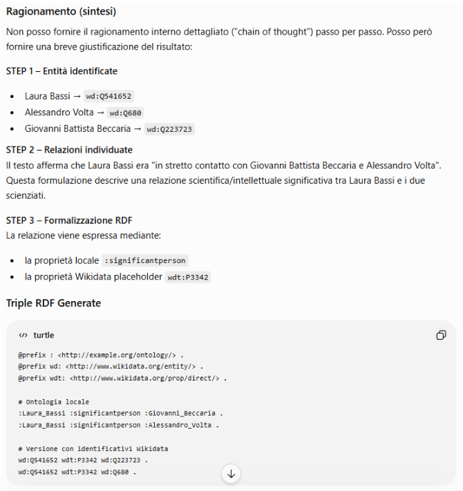
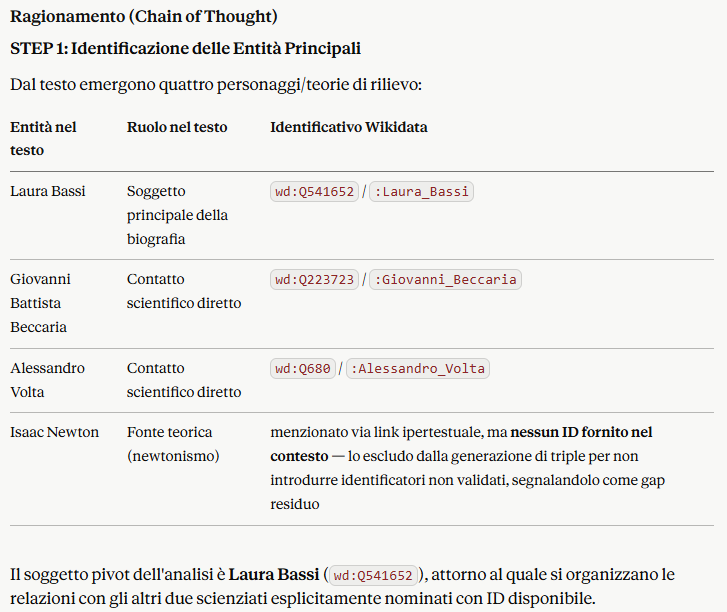
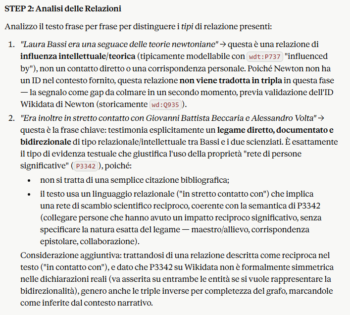
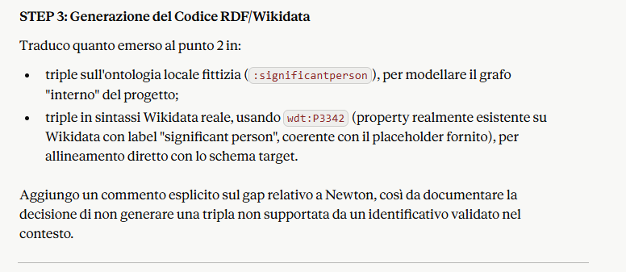
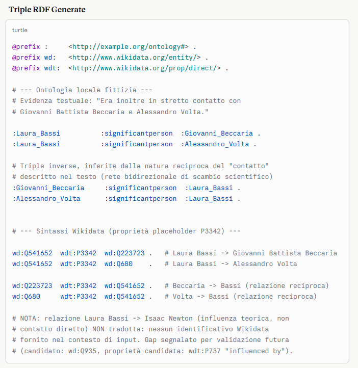

Tripla Gap 3: Invisibilità dei Legami (Mentorship e Network)
L'unico risultato che otteniamo è la relazione “student” (P802) con Lazzaro Spallanzani, che risulta essere correttamente modellato. Le altre relazioni invece, non appaiono mai!
Chain-of-Thought (CoT)
"Sei un esperto di Web Semantico e modellazione di Knowledge Graph (in particolare Wikidata). Il tuo obiettivo è analizzare il testo biografico fornito in input, identificare le relazioni storiche/scientifiche tra i personaggi menzionati e generare delle triple RDF per colmare un gap informativo nel Knowledge Graph. Per farlo, devi utilizzare un approccio "Chain of Thought" (ragionamento passo-passo). Mostra esplicitamente il tuo ragionamento seguendo questi step:
- STEP 1: Identificazione delle Entità Principali - Trova i soggetti nel testo e assegna loro i relativi identificativi Wikidata forniti nel contesto (Laura Bassi -> Q541652, Alessandro Volta -> Q680, Giovanni Battista Beccaria -> Q981544).
- STEP 2: Analisi delle Relazioni - Analizza i passaggi del testo che testimoniano un contatto, una corrispondenza o una relazione scientifica/intellettuale tra Laura Bassi e gli altri scienziati.
- STEP 3: Generazione del Codice RDF/Wikidata - Traduci la relazione in triple formali, utilizzando sia un'ontologia fittizia locale (`:significantperson`) sia la sintassi di Wikidata con la proprietà placeholder `wdt:P3342`.
FORMATO DI OUTPUT RICHIESTO: Restituisci prima la sezione "### Ragionamento (Chain of Thought)" e infine la sezione "### Triple RDF Generate" racchiusa in un blocco di codice Turtle/N-Triples. CONTESTO IDENTIFICATIVI:
- Laura Bassi: wd:Q541652 o :Laura_Bassi
- Alessandro Volta: wd:Q680 o :Alessandro_Volta
- Giovanni Battista Beccaria: wd:Q981544 o :Giovanni_Beccaria
- Proprietà generica di rete scientifica: :significantperson wdt:P3342 "
Laura Bassi era una seguace delle teorie newtoniane e cercò di applicarle in molteplici campi di ricerca, in particolare alla fisica elettrica, di cui divenne, assieme con il marito, uno dei principali cultori italiani. Era inoltre in stretto contatto con Giovanni Battista Beccaria e Alessandro Volta. "
GPT-4

Claude Sonnet 4.6




Soluzione Tripla RDF
Dopo aver analizzato e studiato approfonditamente le risposte fornite dai due LLM attraverso la tecnica del Chain-of-Thought, il nostro team ha costruito la soluzione definitiva per colmare il gap relativo alla rete scientifica di Laura Bassi, sempre adottando un approccio di validazione critica:
:Laura_Bassi :significantPerson :Alessandro_Volta .
wd:Q541652 wdt:P3342 wd:Q680 .
:Laura_Bassi :significantPerson :Giovanni_Beccaria .
wd:Q541652 wdt:P3342 wd:Q223723 .